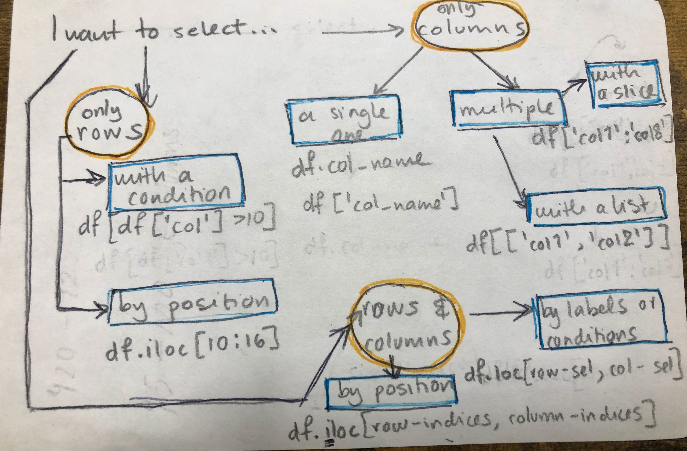

In this lesson we will learn different methods to select data from a pandas.DataFrame.
4.1 Subsetting a pandas.DataFrame
Like it’s often the case when working with pandas, there are many ways in which we can subset a data frame. We will review the core methods to do this.
For all examples we will use simplified data (glacial_loss.csv) from the National Snow and Ice Data Center (Original dataset). The column descriptions are:
year: calendar year
europe - antarctica: change in glacial volume (km3 ) in each region that year
global_glacial_volume_change: cumulative global glacial volume change (km3), starting in 1961
annual_sea_level_rise: annual rise in sea level (mm)
cumulative_sea_level_rise: cumulative rise in sea level (mm) since 1961
First, we read-in the file and get some baisc information about this data frame:
# import pandasimport pandas as pd# read in filedf = pd.read_csv('data/lesson-1/glacial_loss.csv')# see the first five rowsdf.head()
year int64
europe float64
arctic float64
alaska float64
asia float64
north_america float64
south_america float64
antarctica float64
global_glacial_volume_change float64
annual_sea_level_rise float64
cumulative_sea_level_rise float64
dtype: object
# data frame's shape: output is a tuple (# rows, # columns)df.shape
(43, 11)
4.1.1 Selecting a single column…
4.1.1.1 …by column name
This is the simplest case for selecting data. Suppose we are interested in the annual sea level rise. Then we can access that single column in this way:
# seelect a single column by using square brackets []annual_rise = df['annual_sea_level_rise']# check the type of the ouputprint(type(annual_rise))annual_rise.head()
Since we only selected a single column the output is a pandas.Series.
pd.DataFrame = dictionary of columns
Remember we can think of a pandas.DataFrame as a dictionary of its columns? Then we can access a single column using the column name as the key, just like we would do in a dictionary. That is the we just used: df['column_name'].
This is an example of selecting by label, which means we want to select data from our data frame using the names of the columns, not their position.
4.1.1.2 … with attribute syntax
We can also access a single column by using attribute syntax:
This is another example of selecting by labels. We just need to pass a list with the column names to the square brackets []. For example, say we want to look at the change in glacial volume in Europe and Asia, then we can select those columns like this:
# select columns with names "europe" and "asia"europe_asia = df[['europe','asia']]
Notice there are double square brackets. This is because we are passing the list of names ['europe','asia'] to the selection brakcets [].
# check the type of the resulting selectionprint(type(europe_asia))# check the shape of the selectionprint((europe_asia.shape))
<class 'pandas.core.frame.DataFrame'>
(43, 2)
4.1.2.2 … using a slice
Yet another example of selecting by label! In this case we will use the loc selection. The general syntax is
df.loc[ row-selection , column-selection]
where row-selection and column-selection are the rows and columns we want to subset from the data frame.
Let’s start by a simple example, where we want to select a slice of columns, say the change in glacial volume per year in all regions. This corresponds to all columns between europe and antarctica.
# select all columns between 'arctic' and 'antarctica'all_regions = df.loc[:,'europe':'antarctica']all_regions.head()
europe
arctic
alaska
asia
north_america
south_america
antarctica
0
-5.128903
-108.382987
-18.721190
-32.350759
-14.359007
-4.739367
-35.116389
1
5.576282
-173.252450
-24.324790
-4.675440
-2.161842
-13.694367
-78.222887
2
-10.123105
-0.423751
-2.047567
-3.027298
-27.535881
3.419633
3.765109
3
-4.508358
20.070148
0.477800
-18.675385
-2.248286
20.732633
14.853096
4
10.629385
43.695389
-0.115332
-18.414602
-19.398765
6.862102
22.793484
Notice two things:
we used the colon : as the row-selection parameter, which means “select all the rows”
the slice of the data frame we got includes both endpoints of the slice 'arctic':'antarctica'. In other words we get the europe column and the antarctica column. This is different from how slicing works in base Python and NumPy, where the endpoint is not included.
4.1.3 Selecting rows…
Now that we are familiar with some methods for selecting columns, let’s move on to selecting rows.
4.1.3.1 … using a condition
Selecting which rows satisfy a particular condition is, in my experience, the most usual kind of row subsetting. The general syntax for this type of selection is df[condition_on_rows]. For example, suppose we are intersted in all data after 1996. We can select those rows in this way:
# select all rows with year > 1996after_96 = df[df['year']>1996]after_96
year
europe
arctic
alaska
asia
north_america
south_america
antarctica
global_glacial_volume_change
annual_sea_level_rise
cumulative_sea_level_rise
36
1997
-13.724106
-24.832246
-167.229145
-34.406403
-27.680661
-38.213286
-20.179090
-4600.686013
0.909625
12.709077
37
1998
-13.083338
-110.429302
-107.879027
-58.115702
30.169987
-3.797978
-48.129928
-4914.831966
0.867807
13.576884
38
1999
-8.039555
-64.644068
-87.714653
-26.211723
5.888512
-8.038630
-40.653001
-5146.368231
0.639603
14.216487
39
2000
-17.008590
-96.494055
-44.445000
-37.518173
-29.191986
-2.767698
-58.873830
-5435.317175
0.798202
15.014688
40
2001
-8.419109
-145.415483
-55.749505
-35.977022
-0.926134
7.553503
-86.774675
-5764.039931
0.908074
15.922762
41
2002
-3.392361
-48.718943
-87.120000
-36.127226
-27.853498
-13.484593
-30.203960
-6013.225500
0.688358
16.611120
42
2003
-3.392361
-48.718943
-67.253634
-36.021991
-75.066475
-13.223430
-30.203960
-6289.640976
0.763579
17.374699
Let’s break down what is happening here. In this case the condition for our rows is df['year']>1996, this checks which rows have a value greater than 1996 in the year column. Let’s see this explicitely:
# check the type of df['year']>1996print(type(df['year']>1996))df['year']>1996
The output is a pandas.Series with boolean values (True or False) indicating which rows satisfy the condition year>1996. When we pass such a series of boolean values to the selection brackets [] we keep only those rows with a True value.
Here’s another example of using a condition. Suppose we want to look at data from years 1970 to 1979. One way of doing this is to use the in operator in our condition:
range(1970,1980) constructs consecutive integers from 1970 to 1979 - remember the right endopoint (1980) is not included!
df['year'].isin(range(1970,1980)) is then a pandas.Series of boolean values indicating which rows have year equal to 1970, …, 1979.
when we put df['year'].isin(range(1970,1980)) inside the selection brackets [] we obtain the rows of the data frame with year equal to 1970, …, 1979.
loc for row selection
It is equivalent to write
# select rows with year<1965df[df['year'] <1965]
and
# select rows with year<1965 using lovedf.loc[ df['year'] <1965 , :]
In the second one:
we are using the df.loc[ row-selection , column-selection] syntax
the row-selection parameter is the condition df['year']<1965
the column-selection parameter is a colon :, which indicates we want all columns for the rows we are selecting.
We prefer the first syntax when we are selecting rows and not columns since it is simpler.
4.1.3.2 … using multiple conditions
We can combine multipe conditions by surrounding each one in parenthesis () and using the or operator | and the and operator &.
or example:
# select rows with # annual_sea_level_rise<0.5 mm OR annual_sea_level_rise>0.8 mmdf[ (df['annual_sea_level_rise']<0.5) | (df['annual_sea_level_rise']>0.8)]df.head()
year
europe
arctic
alaska
asia
north_america
south_america
antarctica
global_glacial_volume_change
annual_sea_level_rise
cumulative_sea_level_rise
0
1961
-5.128903
-108.382987
-18.721190
-32.350759
-14.359007
-4.739367
-35.116389
-220.823515
0.610010
0.610010
1
1962
5.576282
-173.252450
-24.324790
-4.675440
-2.161842
-13.694367
-78.222887
-514.269862
0.810625
1.420635
2
1963
-10.123105
-0.423751
-2.047567
-3.027298
-27.535881
3.419633
3.765109
-550.575640
0.100292
1.520927
3
1964
-4.508358
20.070148
0.477800
-18.675385
-2.248286
20.732633
14.853096
-519.589859
-0.085596
1.435331
4
1965
10.629385
43.695389
-0.115332
-18.414602
-19.398765
6.862102
22.793484
-473.112003
-0.128392
1.306939
and example
# select rows with cumulative_sea_level_rise>10 AND global_glacial_volume_change<-300df[ (df['cumulative_sea_level_rise']>10) & (df['global_glacial_volume_change']<-300)]
year
europe
arctic
alaska
asia
north_america
south_america
antarctica
global_glacial_volume_change
annual_sea_level_rise
cumulative_sea_level_rise
32
1993
16.685013
-73.666274
-43.702040
-65.995130
-33.151246
-20.578403
-20.311577
-3672.582082
0.671126
10.145254
33
1994
0.741751
-3.069084
-59.962273
-59.004710
-89.506142
-15.258449
-8.168498
-3908.977191
0.653025
10.798280
34
1995
-2.139665
-58.167778
-74.141762
3.500155
-0.699374
-19.863392
-25.951496
-4088.082873
0.494767
11.293047
35
1996
-6.809834
-4.550205
-74.847017
-67.436591
4.867530
-21.080115
-11.781489
-4271.401594
0.506405
11.799452
36
1997
-13.724106
-24.832246
-167.229145
-34.406403
-27.680661
-38.213286
-20.179090
-4600.686013
0.909625
12.709077
37
1998
-13.083338
-110.429302
-107.879027
-58.115702
30.169987
-3.797978
-48.129928
-4914.831966
0.867807
13.576884
38
1999
-8.039555
-64.644068
-87.714653
-26.211723
5.888512
-8.038630
-40.653001
-5146.368231
0.639603
14.216487
39
2000
-17.008590
-96.494055
-44.445000
-37.518173
-29.191986
-2.767698
-58.873830
-5435.317175
0.798202
15.014688
40
2001
-8.419109
-145.415483
-55.749505
-35.977022
-0.926134
7.553503
-86.774675
-5764.039931
0.908074
15.922762
41
2002
-3.392361
-48.718943
-87.120000
-36.127226
-27.853498
-13.484593
-30.203960
-6013.225500
0.688358
16.611120
42
2003
-3.392361
-48.718943
-67.253634
-36.021991
-75.066475
-13.223430
-30.203960
-6289.640976
0.763579
17.374699
4.1.3.3 … by position
All the selections we have done so far have been using labels or using a condition. Sometimes we might want to select certain rows depending on their actual position in the data frame. In this case we use iloc selection with the syntax df.iloc[row-indices]. iloc stands for integer-location based indexing. Let’s see some examples:
# select the fifht row = index 4df.iloc[4]
year 1965.000000
europe 10.629385
arctic 43.695389
alaska -0.115332
asia -18.414602
north_america -19.398765
south_america 6.862102
antarctica 22.793484
global_glacial_volume_change -473.112003
annual_sea_level_rise -0.128392
cumulative_sea_level_rise 1.306939
Name: 4, dtype: float64
# select rows 23 through 30, inclduing 30df.iloc[23:31]
year
europe
arctic
alaska
asia
north_america
south_america
antarctica
global_glacial_volume_change
annual_sea_level_rise
cumulative_sea_level_rise
23
1984
8.581427
-5.755672
-33.466092
-20.528535
-20.734676
-8.267686
-3.261011
-2569.339802
0.232609
7.097624
24
1985
-5.970980
-49.651089
12.065473
-31.571622
-33.833985
10.072906
-13.587886
-2682.857926
0.313586
7.411210
25
1986
-5.680642
22.900847
7.557447
-18.920773
-33.014743
-4.652030
30.482473
-2684.197632
0.003701
7.414911
26
1987
8.191477
12.387780
-24.007862
-41.121970
-48.560996
1.670733
3.130190
-2773.325568
0.246210
7.661120
27
1988
-11.117228
-31.066489
49.897712
-21.300712
-46.545435
13.460422
-37.986834
-2858.767621
0.236028
7.897148
28
1989
14.863220
-23.462392
-36.112726
-46.528372
-57.756422
-21.687470
-10.044757
-3041.169131
0.503872
8.401020
29
1990
-1.226009
-27.484542
-92.713339
-35.553433
-56.563056
-31.077022
-29.893352
-3318.220397
0.765335
9.166355
30
1991
-14.391425
-34.898689
-8.822063
-15.338299
-31.458010
-7.162909
-35.968429
-3467.630284
0.412734
9.579089
Notice since we are back to indexing by position the right endpoint of the slice (6) is not included in the ouput.
4.1.4 Selecting rows and columns simultaneously…
Selecting rows and columns simultaneously can be done using loc (labels or conditions) or iloc (integer position).
4.1.4.1 …by labels or conditions
When we want to select rows and columns simultaneously by labels or conditions we can use loc selection with the syntax
df.loc[ row-selection , column-selection]
specifying both paratmers: row-selection and column-selection. These parameters can be a condition (which generates a boolean array) or a subset of labels from the index or the column names. Let’s see an examples:
# select change in glacial volume in Europe per year after 2000df.loc[df['year']>2000,['year','europe']]
year
europe
40
2001
-8.419109
41
2002
-3.392361
42
2003
-3.392361
Let’s break it down:
we are using the df.loc[ row-selection , column-selection] syntax
the row-selection parameter is the condition df['year']>1990, which is a boolean array saying which years are greater than 1990
the column-selection parameter is ['year','europe'] which is a list with the names of the two columns we are intersted in.
4.1.4.2 … by position
When we want to select rows and columns simultaneously by position we use iloc selection with the syntax:
df.iloc[ row-indices , column-indices]
For example,
# select rows 3-7 (including 7) and columns 3 and 4df.iloc[ 3:8, [3,4] ]
alaska
asia
3
0.477800
-18.675385
4
-0.115332
-18.414602
5
0.224762
-14.630284
6
-7.174030
-39.013695
7
-0.660556
7.879589
Let’s break it down:
we are using the df.iloc[ row-indices , column-indices] syntax
the row-indices parameter is the slice of integer indices 3:8. Remember the right endpoint (8) won’t be included.
the column-indices parameter is the list of integer indices 3 and 4. This means we are selecting the fourth and fifth column.
4.1.5 Notes about loc and iloc
iloc vs. loc
At the beginning, the difference between iloc and loc can be confusing. Remember the i in iloc stands for integer-location, this reminds us iloc only uses integer indexing to retrieve information from the data frames in the same way as indexing for Python lists.
We can also access columns by position using iloc - but it is best not to if possible.
Suppose we want to access the 10th column in the data frame - then we want to select a column by position. In this case the 10th column is the annual sea level rise data and the 10th position corresponds to the index 9. We can select this column by position using the iloc selection:
# select column by position using iloc# the syntax is iloc[row-indices, column-indices]# [:,9] means "select all rows from the 10th column"annual_rise_3 = df.iloc[:,9]annual_rise_3.head()
Unless you are really looking for information about the 10th column, do not access a column by position. This is bound to break in many ways:
it relies on a person correctly counting the position of a column. Even with a small dataset this can be prone to error.
it is not explicit: if we want information about sea level rise df.annual_sea_level_rise or df['annual_sea_level_rise'] are explicitely telling us we are accessing that information. df.iloc[:,9] is obscure and uninformative.
datastets can get updated. Maybe a new column was added before annual_sea_level_rise, this would change the position of the column, which would make any code depending on df.iloc[:,9] invalid. Accessing by label helps reproducibility!
4.2 Summary

pandas.DataFrame selection flow chart
4.3 Resources
What is presented in this section is a comprehensive, but not an exhaustive list of methods to select data in pandas.DataFrames. There are so many ways to subset data to get the same result. Some of the content from this lesson is adapted from the following resources and I encourage you to read them to learn more!